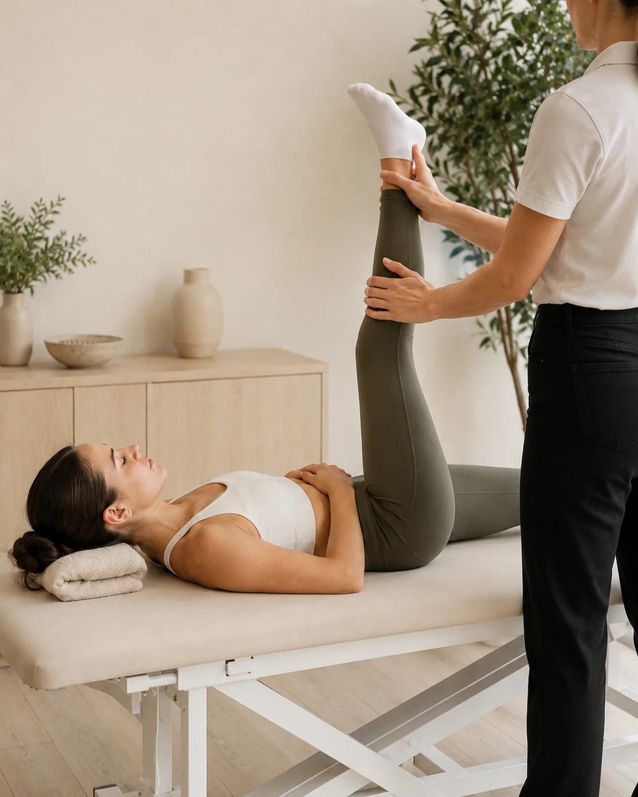
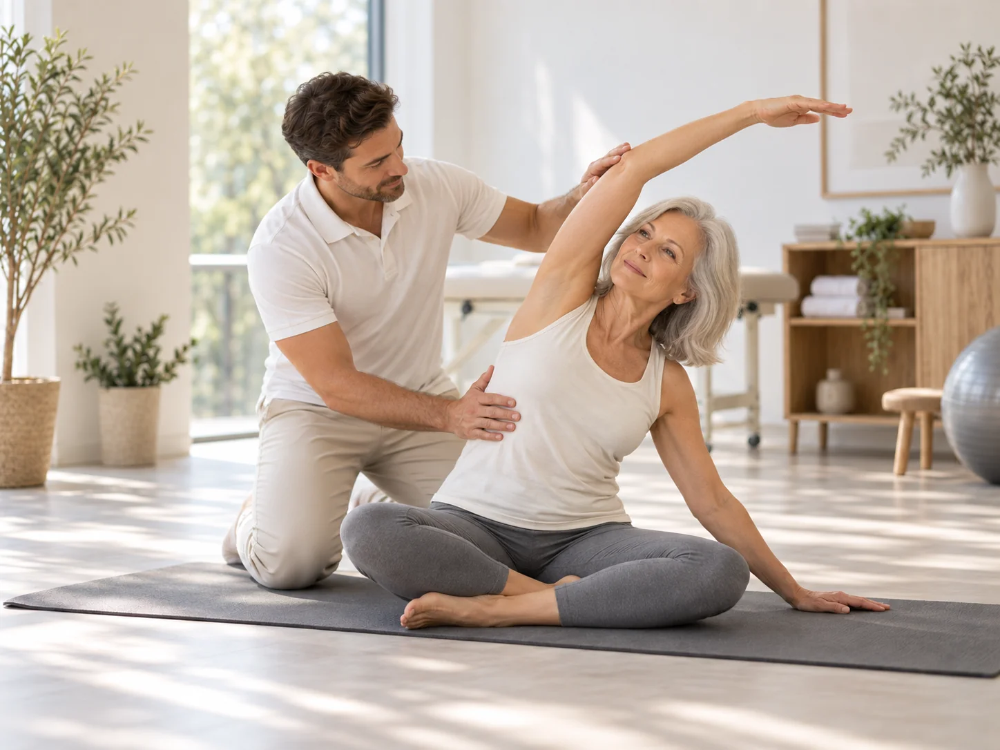
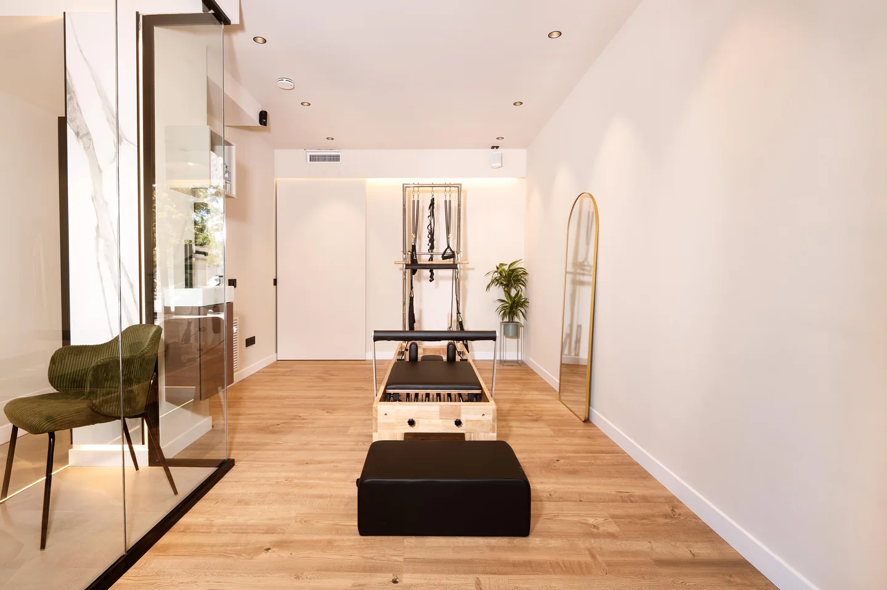

Movilidad
Amplía el rango de movimiento de tus articulaciones para que cueste menos moverte cada día.
Trabajamos cadera, hombros, tobillos y columna en sus ejes naturales, reduciendo la fricción articular y facilitando gestos cotidianos fluidos.
05 — STRETCHING
Sesiones diseñadas para mejorar tu movilidad, ganar flexibilidad y liberar las tensiones que limitan tu movimiento.

Qué es el Stretching
El Stretching es un trabajo guiado de movilidad y flexibilidad, adaptado a cómo te mueves y cómo lo sientes en cada sesión. No es una tabla de estiramientos igual para todos: se ajusta a tu cuerpo, tu ritmo y el objetivo del día.
No se trata de forzar el cuerpo, sino de recuperar espacio para moverse.
Para quién es
Cuatro situaciones habituales en las que ganar movilidad y liberar tensión muscular marca una diferencia real en tu día a día.
Puede ser para ti si...

Filosofía Physio Wellness
En Physio Wellness entendemos que el cuerpo no responde al exceso de tensión. El Stretching no es una rutina estandarizada ni una serie de posiciones forzadas: es un proceso guiado que parte de observar exactamente cómo responde tu estructura en cada sesión.
Evitamos tensiones agresivas que generen respuestas reflejas de defensa o sobrecarga en los tejidos articulares.
Trabajar sobre la tolerancia de los tejidos y el control motor para que la amplitud ganada sea funcional y duradera fuera de la sesión.
Este enfoque conecta directamente con el principio fundador del centro: evaluar con precisión clínica para intervenir con movimiento consciente.
Conocer los principios del MétodoÁmbitos de trabajo
Cada sesión combina varios de estos objetivos según cómo llegues ese día, equilibrando descarga, movilidad y control.
Amplía el rango de movimiento de tus articulaciones para que cueste menos moverte cada día.
Trabajamos cadera, hombros, tobillos y columna en sus ejes naturales, reduciendo la fricción articular y facilitando gestos cotidianos fluidos.
Gana elasticidad muscular de forma progresiva y adaptada a tu punto de partida.
Elongación consciente de las cadenas musculares posteriores y anteriores, respetando el umbral de comodidad sin provocar rebotes ni rigidez refleja.
Trabaja el recorrido completo de cada gesto, sin forzar más allá de lo que tu cuerpo permite.
Buscamos ganar grados de libertad en los extremos de rango donde habitualmente se pierde control, mejorando la seguridad en cualquier movimiento.
Libera la tensión acumulada por el día a día, el deporte o las posturas mantenidas.
Desactivación de contracturas y sobrecarga en cuello, espalda y piernas mediante respiración diafragmática y tracciones guiadas.
Acompaña la recuperación entre sesiones de fuerza, Pilates u otras actividades físicas.
Estimula la oxigenación de los tejidos y restablece el tono de reposo neuromuscular para favorecer una recuperación óptima.
El recorrido
Tres momentos coordinados para asegurar que cada minuto de trabajo tiene un propósito claro y un beneficio tangible.
Momento 01
Cómo llegas, cómo te mueves y qué necesitas trabajar.
Valoramos la sensación general de rigidez, las zonas de sobrecarga acumulada y los rangos articulares antes de comenzar cualquier movimiento.
Momento 02
Movilidad, flexibilidad, respiración, amplitud de movimiento o descarga según las necesidades de la sesión.
Aplicamos estiramientos asistidos, tracciones suaves, movilidad articular activa y trabajo fascial según los requerimientos detectados.
Momento 03
Buscamos que el movimiento ganado tenga sentido y continuidad fuera de la sesión.
Consolidamos las sensaciones corporales con pautas sencillas y conscientes para que mantengas la soltura en tu rutina diaria o entrenamientos.
Ecosistema Physio Wellness
Entendemos el cuerpo como una unidad funcional donde cada disciplina potencia a las demás. Stretching actúa como el punto de encuentro para ganar movilidad, soltura y recuperación.
Puede complementar el trabajo de movilidad y recuperación dentro del entrenamiento.
Entrenar la fuerza sin suficiente rango articular comprime las estructuras; al incorporar Stretching aseguras que cada gesto se desarrolle en una trayectoria óptima, descargando la musculatura sobrecargada entre entrenamientos.
Ver área de FuerzaPuede ayudar a ampliar o preparar determinados rangos de movimiento.
El trabajo en el Reformer exige control motor y alineación corporal. Las sesiones de Stretching liberan las restricciones miofasciales para que los ejercicios de Pilates se ejecuten con mayor fluidez y precisión técnica.
Ver área de PilatesPuede dar continuidad al trabajo de movimiento dentro de determinados procesos.
Tras completar una fase clínica de tratamiento en fisioterapia, el Stretching asistido permite reintroducir movimiento progresivo y reducir el riesgo de recaídas al mantener el espacio articular ganado.
Ver área de FisioterapiaInstalaciones en Sitges
Luz natural, calma acústica y materiales nobles para crear un entorno propicio para desconectar de las prisas y enfocar tu atención en el cuerpo.



Tarifas
Stretching comparte la misma estructura de valoración inicial y sesiones que las demás áreas clínicas de Physio Wellness.
Misma tarifa de sesión individual en clínica que Fisioterapia, Bienestar, Fuerza y Pilates.
Experiencias reales
Marçal es un excelente profesional, en dos sesiones la mejoría es total.
Las instalaciones impecables, y también destacar la eficiencia y amabilidad de Abril.
Recomiendo totalmente a este profesional a cualquiera que necesite una atención de calidad. Tiene un conocimiento muy amplio, es atento y está realmente comprometido con la recuperación de sus pacientes. Desde la primera sesión se tomó el tiempo de entender la raíz del problema, no solo los síntomas, y creó un plan de tratamiento personalizado que marcó una diferencia real.
¡Gracias!
Marçal es muy profesional, resolutivo y transmite confianza. Soy paciente oncológica y su tratamiento está dando muy buen resultado. También me ha dado unos ejercicios que puedo hacer en mi casa. Estoy muy conforme.
Muy buenas manos, técnica y conocimiento profundo, con un trato muy atento y personalizado. Disponen de todo tipo de maquinaria cuando hace falta. Estoy tratando una lesión de rodilla y ya noté mejoría desde la primera sesión.
Totalmente recomendable, Marçal y su equipo son de lo mejor.
He tenido una muy buena experiencia en esta clínica. El tratamiento me ayudó de verdad a quitarme el dolor de espalda, y noté una mejoría importante después de las sesiones. Abril, la administradora, es muy amable, atenta y organizada, lo que hace que cada visita sea cómoda y sin complicaciones.
Un agradecimiento especial a Marshall, muy cualificado, profesional, atento y que realmente sabe lo que hace. Me sentí seguro y bien cuidado durante todo el proceso.
Encontré este centro y me han gustado mucho las sesiones que he tenido. Tiene un buen conocimiento del cuerpo y sabe cómo hacer que el paciente se sienta mejor tanto de forma inmediata como a largo plazo.
Sesiones enfocadas en mejorar tu movilidad, flexibilidad y recuperación.